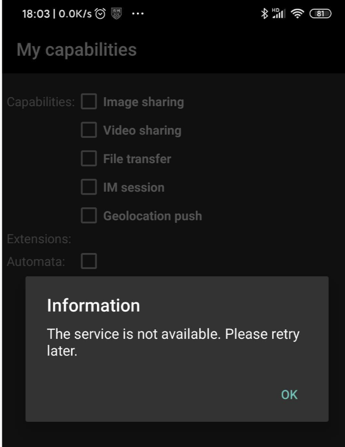
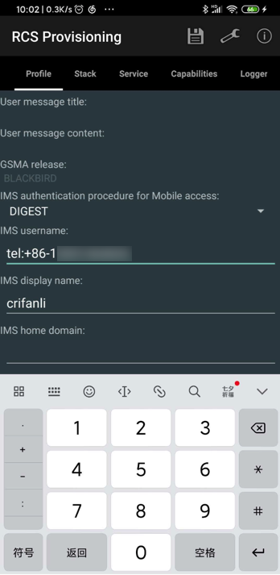

演示RCS
已编译安装好RCS的apk后，接着去演示RCS。
在演示之前，需要去 Provisioning开通服务 这个RCS的apk中，设置对应的必要参数，然后才能用于演示RCS服务。
最近进展：没有能够成功的演示RCS的功能，但是搞懂了一些参数配置。
无法演示RCS的功能
暂时还没彻底搞清楚，如何才能让RCS服务正常的运行起来。
导致：上述的几个（core，RI，settings等）apk，尝试点击服务，都会出现：
Information
The service is not available Please retry later

折腾过很久，解决了各种编译错误和研究了各种代码逻辑，依旧没解决。
需要先配置好核心参数
不过后续搞懂了一些入手的基本逻辑：
要去
- 给
core=RCS Provisioning的apk中的各种参数配置好，才（可）能实现RCS服务正常运行- 以及可能还需要：额外的
AS=Application Server，才能确保服务可用。
- 以及可能还需要：额外的
运行RCS是否需要AS？
目前理解是：
此处需要额外的服务器，但（可以不用，不是）AS服务器，而是：IMS platform=IMS平台
详细解释是：
- 想要测试RCS协议栈
- 至少需要
- IMS platform
- 可以测试功能：
- Capabilities
- Video/Image/Geoloc sharing
- MM session
- 可以测试功能：
- 在没有AS=AS IM的情况下
- 也可以测试功能
- 1-1 chat
- File transfer
- 也可以测试功能
- IMS platform
- 只有需要
- AS=IM的AS
- 才能（完整）测试
- 1-1 chat
- Group chat
- File transfer
- 才能（完整）测试
- AS=IM的AS
- 至少需要
- 如何选择IMS platform
- 开源产品（组合出IMS platform）
- kamailio
- 作为：P/I/S-CSCF
- bind
- 作为：DNS server
- FHoSS=Open IMS Core=OpenIMS=OpenIMSCore=Open Source IMS Core
- 作为：HSS
- kamailio
- 开源产品（组合出IMS platform）
Kamailio
有机会再去折腾：
tutorials:ims:installation-howto Kamailio SIP Server Wiki
core中的Profile的部分配置
此处贴出core，目前已搞懂的参数：
RCS Provisioning中的Profile中的一些核心参数：
- IMS authentication procedure for Mobile access
DIGEST
- IMS username
tel:+86-13812345678
- IMS display name
crifanli
- IMS home domain
ims.mnc002.mcc460.3gppnetwork.org
如图：
